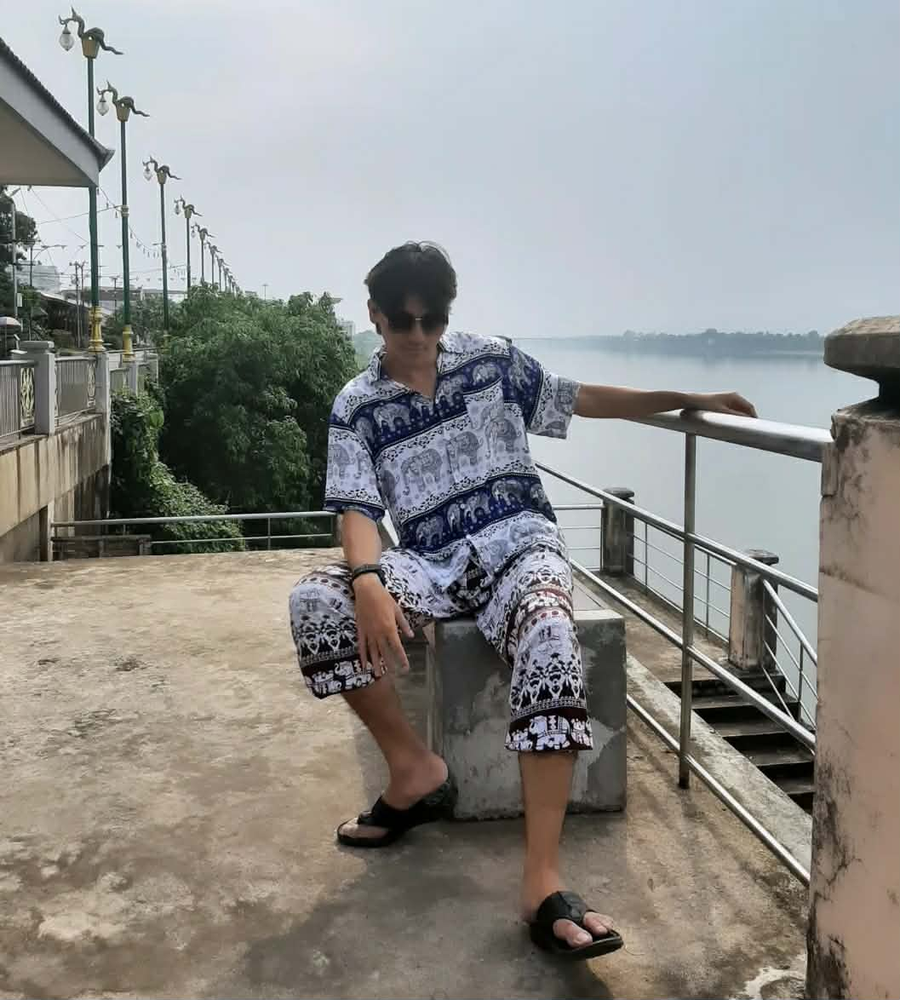

Data Warehouse System — Group Project
Built a data warehouse using simulated data, orchestrating data flow with Apache NiFi and developing ETL processes to transform raw data ready for downstream analytics.

4th-Year Student — Data Science & Business Analytics
Bachelor's student in Data Science and Business Analytics, School of Information Technology, King Mongkut's Institute of Technology Ladkrabang (KMITL). I have hands-on experience from academic projects in building data pipelines and data warehouses, developing machine learning and deep learning models, and business data analysis. I'm also keen on further developing my skills in Data Engineering, Data Science, and Deep Learning.
Education: B.Sc. in Data Science and Business Analytics — King Mongkut's Institute of Technology Ladkrabang (KMITL), 2023 – Present
Built a data warehouse using simulated data, orchestrating data flow with Apache NiFi and developing ETL processes to transform raw data ready for downstream analytics.
Built a website with an AI pipeline that generates 3D models from text or images, combining generative AI APIs with image/text-to-3D conversion so results can be exported and used directly to speed up Roblox game development.
Studied the relationship between demographic factors — income, education, and family status — and life satisfaction across countries using multiple regression, enabling prediction of satisfaction levels from given demographic factors.
Built a deep learning model to detect similarity in medical images using CNN and ViT, comparing vascular anastomosis images against a vector database to find similar images and help prevent errors in medical education.